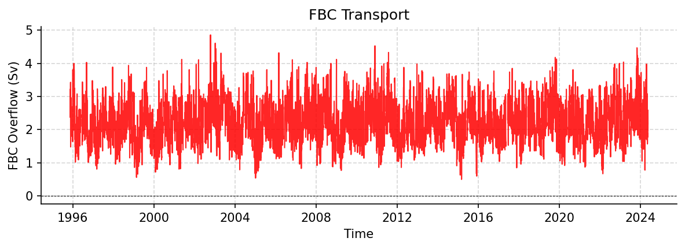

FBC Datasets
OS_GSR_FBC_D_1995_2024.nc
Dataset Overview
Project: B. Hansen, K. M. Larsen: NACLIM - Fluxes: Faroe Bank Channel overflow transport
Description: FBC Overflow transport time series
Source File: OS_GSR_FBC_D_1995_2024.nc
Data Product: Daily averaged kinematic FBC-overflow flux (transport) in Sv
License: CC-BY-4.0
Date Created: 2025-04-22T00:00:00Z
Time Coverage: 1995-11-14 to 2024-05-18
Record Length: 10,414 observations (28.5 years)
Sampling Frequency: daily
Citation:
Larsen, K. M. H., Hansen, B., Hátún, H., Johansen, G. E., Østerhus, S., & Olsen, S.M. (2024). The Coldest and densest overflow branch into the North Atlantic is stable in transport, but warming. Geophysical Research Letters, 51,e2024GL110097. https://doi.org/10.1029/2024GL110097These data were collected and made freely available by the OceanSITES project and the national programs that contribute to it.
Acknowledgement:
The time series was generated by the Faroe Marine Research Institute, Faroe Islands. Funding for the in situ Faroe Bank Channel measurements is from the Environmental Research Programme of the Nordic Council of Ministers (NMR) 1993–1998, from national Nordic research councils, from the Danish DANCEA programme, and from the European Framework Programs, lately under grant agreement no. 633211 (AtlantOS) and under grant agreement no. 101136548 (ObsSea4Clim).
Dataset Visualization
{kind=link}

Time series plot for FBC dataset.
Dataset Statistics
Total Variables: 1
Total Coordinates: 4
Dataset Size: 0.12 MB
Coordinate Information
The following table shows information about the dataset coordinates in the standardised version, including coordinate name remapping from the original, if any:
Coordinate |
Description |
Units |
Size |
Min Value |
Max Value |
Missing % |
|---|---|---|---|---|---|---|
DEPTH |
Depth: Depth below surface of the water |
m |
(1,) |
9969209968386869046778552952102584320.00 |
9969209968386869046778552952102584320.00 |
0.0% |
LATITUDE |
Latitude: Latitude north (WGS84) |
degree_north |
(2,) |
61.36 |
61.50 |
0.0% |
LONGITUDE |
Longitude: Longitude east (WGS84) |
degree_east |
(2,) |
-8.36 |
-8.17 |
0.0% |
TIME |
Time |
seconds since 1970-01-01T00:00:00Z |
(10414,) |
1995-11-14 |
2024-05-18 |
0.0% |
Variable Information
The following table shows the mapping from original variable names to standardized names, along with key statistics for each variable.
Variable |
Description |
Units |
Size |
Min Value |
Max Value |
Missing % |
|---|---|---|---|---|---|---|
FBC_tr → TRANS_FBC |
FBC Overflow: FBC Overflow transport time series |
sverdrup |
(10414, 1) |
0.50 |
4.86 |
5.5% |
Metadata (edits applied noted)
The following metadata describes this dataset:
Title: Faroe Bank Channel Overflow Volume Transport
Summary: Time series of volume transport of the Faroe Bank Channel Overflow (FBCO). The transports are Daily averaged kinematic FBC-overflow as described in Hansen et al, 2016.
Description*: FBC Overflow transport time series
Program*: FBC
Project: B. Hansen, K. M. Larsen: NACLIM - Fluxes: Faroe Bank Channel overflow transport
Source: subsurface moorings
Id: OS_GSR_FBC_D_1995_2024
Naming Authority: OceanSITES
License: CC-BY-4.0
Acknowledgment*: The time series was generated by the Faroe Marine Research Institute, Faroe Islands. Funding for the in situ Faroe Bank Channel measurements is from the Environmental Research Programme of the Nordic Council of Ministers (NMR) 1993–1998, from national Nordic research councils, from the Danish DANCEA programme, and from the European Framework Programs, lately under grant agreement no. 633211 (AtlantOS) and under grant agreement no. 101136548 (ObsSea4Clim).
References: http://www.oceansites.org/tma/index.html
Weblink*: https://zenodo.org/records/19554222
Platform Code: FBCO
Wmo Platform Code: 6801006
Processing Level: Known bad data has been replaced with values based on surrounding data, Data interpolated, Data manually reviewed, Other QC process applied
Data Product*: Daily averaged kinematic FBC-overflow flux (transport) in Sv
Site Code: GSR
Array: GSR
Network: GSR
Time Coverage Start: 1995-11-14
Time Coverage End: 2024-05-18
Geospatial Lat Min: 61.36
Geospatial Lat Max: 61.5
Geospatial Lon Min: -8.36
Geospatial Lon Max: -8.17
Geospatial Vertical Min: 500
Geospatial Vertical Max: 790
Creator Institution: Havstovan - Faroe Marine Research Institute
Contributor Name: Karin Margretha H. Larsen, Karin Margretha H. Larsen, Karin Margretha H. Larsen, Karin Margretha H. Larsen, Bogi Hansen, Hjálmar Hátún, Steffen M. Olsen, Svein Østerhus
Contributor Role: originator, principalInvestigator, publisher, contributor, contributor, contributor, contributor, contributor
Contributor Role Vocabulary: https://vocab.nerc.ac.uk/collection/G04/current/
Contributor Email: KarinL@hav.fo, KarinL@hav.fo, KarinL@hav.fo, KarinL@hav.fo, bogihan@hav.fo, hjalmarh@hav.fo, smo@dmi.dk, svos@norceresearch.no
Contributor Id: https://orcid.org/0000-0001-7033-9139, https://orcid.org/0000-0001-7033-9139, http://www.hav.fo, , https://orcid.org/0000-0001-8697-0013, , ,
Contributing Institutions*: Faroe Marine Research Institute (FAMRI)
Contributing Institutions Vocabulary: https://edmo.seadatanet.org/report/3084
Contributing Institutions Role:
Conventions: OceanSITES-1.4, OceanSITES-1.5
featureType*: timeSeries
featureType_vocabulary: https://cfconventions.org/cf-conventions/v1.6.0/cf-conventions.html#_features_and_feature_types
Cdm Data Type: Station
Data Type: OceanSITES time-series data
Source File*: OS_GSR_FBC_D_1995_2024.nc
Source Path*: ~/.amocatlas_data/OS_GSR_FBC_D_1995_2024.nc
Source Url*: https://zenodo.org/records/19554222/files/
Date Created: 2025-04-22T00:00:00Z
Date Modified: 2026-08-01T00:00:00Z
Processing Software: http://github.com/AMOCcommunity/amocatlas
Processing Version: v0.4.0
Processing Datasource*: fbc
Format Version: 1.4
Applied Variable Mapping: {‘FBC_tr’: ‘TRANS_FBC’}
Keywords: OCEANOGRAPHY: PHYSICAL >Currents, OCEANOGRAPHY: GENERAL >North Atlantic oceanography, OCEANOGRAPHY: GENERAL >Time series experiments
Keywords Vocabulary: AGU Index Terms
Update Interval: void
Comment: The array instrument data that the transports are based on are available from the Faroe Marine Research Institute
Data Mode: D
Sea Area: North Atlantic Ocean
Geospatial Lat Units: degree_north
Geospatial Lon Units: degree_east
Geospatial Vertical Positive: down
Geospatial Vertical Units: meter
Time Coverage Duration: P28Y07M04D
Time Coverage Resolution: PT01D
Netcdf Version: 3.5
Qc Indicator: excellent
Contributor Institute: Faroe Marine Research Institute (Faroe Islands); National Centre for Climate Research (Denmark); NORCE Research (Norway)